- ▶ まず知っておくべきノード
- デフォルトイベント
- アビリティ制御
- Montage 制御
- Gameplay Effect（GA 内から付与）
- Gameplay Cue（GA 内から発火）
- Effect Context
- Ability Tasks（主要）
Character BP — まず知っておくべきノード
Character BP / 任意の Actor BPCharacter BP（またはプレイヤーの入力処理が書かれた Actor）から呼ぶ機会が多い主要ノード。GAS を使い始めたら最初に覚えたいものを優先度順に並べた。詳細はカテゴリ別セクションを参照。
| ノード名 | 用途 / 注意・補足 | |
|---|---|---|
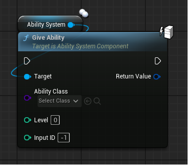 |
Give Ability | アビリティを ASC に登録する。 BeginPlay で呼ぶのが基本。戻り値の Spec Handle を保存すると Clear Ability で後から削除できる。同一クラスを複数回 Give するとスロットが増え続けるため 1 クラス 1 回が原則。BP 03 |
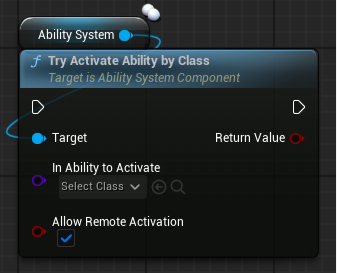 |
Try Activate Ability by Class | クラス指定でアビリティを発動する。 |
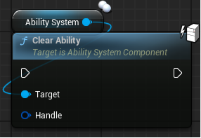 |
Clear Ability | アビリティを ASC から削除する。 Give Ability の戻り値（Spec Handle）を保持しておき、それを渡す。 |
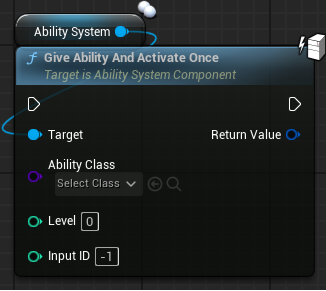 |
Give Ability and Activate Once | 登録と同時に一度だけ発動する。使い捨てアビリティに便利。 ループで呼ぶとスロットが増え続けるため、繰り返し使うアビリティには不向き。 |
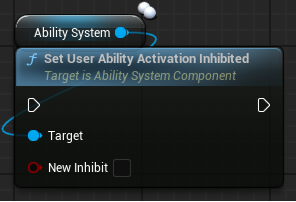 |
Set User Ability Activation Inhibited | フラグ 1 つで全アビリティをまとめてロック／アンロックする。 カットシーン・会話中に全入力を止めたいときに使う。タグ設計が不要なシンプルな全停止手段。 |
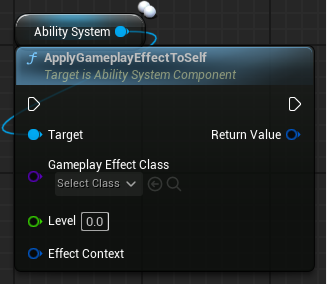 |
Apply Gameplay Effect to Self | 自分の ASC に GE を付与する。 AbilitySystem コンポーネント参照から呼ぶ（ ApplyGameplayEffectToSelf）。BP 04 |
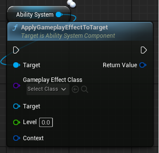 |
Apply Gameplay Effect to Target | 別の Actor（相手）の ASC に GE を付与する。 Target ピンに相手の ASC コンポーネント参照を渡す。ダメージ・デバフに使う。BP EX 02 |
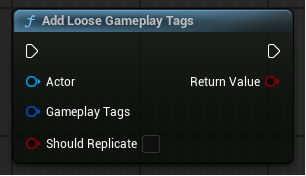 |
Add Loose Gameplay Tags | GE なしで ASC に直接タグを付与する。 Actor ピンに Self を必ず繋ぐ（未接続でサイレント失敗）。単一タグは Make Literal Gameplay Tag Container を経由する。BP 04 |
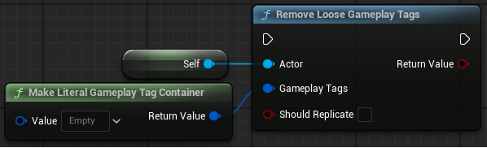 |
Remove Loose Gameplay Tags | ASC から Loose タグを削除する。 Add とペアで使う。BP 04 |
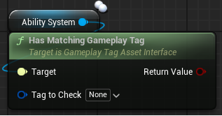 |
Has Matching Gameplay Tag | ASC が指定タグを持つか確認する（bool）。 Target は AbilitySystem コンポーネント参照（関数ノードではない）。BP 04 |
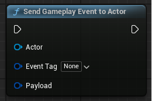 |
Send Gameplay Event to Actor | Actor に向けて Gameplay Event を送信する。 AnimNotify → GA 内 Wait Gameplay Event への橋渡し。Actor ピン未接続でサイレント失敗。BP 06 |
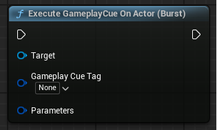 |
Execute GameplayCue On Actor (Burst) | 一度だけ GameplayCue を発火させる。ヒットエフェクト・SE など。 GameplayCueNotify_Static の On Execute が呼ばれる。BP EX 02 |
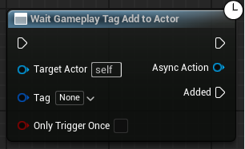 |
Wait Gameplay Tag Add to Actor | 指定タグが ASC に追加されたタイミングを検知する。 登録時点でタグが既にある場合は即発火。ループで使う場合は Only Trigger Once: true 必須。BP 04 |
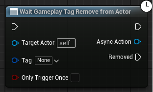 |
Wait Gameplay Tag Remove from Actor | 指定タグが ASC から削除されたタイミングを検知する。 同上。BP 04 |
GameplayAbility BP — まず知っておくべきノード
GameplayAbility BPGameplayAbility Blueprint のグラフ内で使う基本ノード。アビリティの起動から終了まで、最低限これだけ知っていれば実用的なアビリティが組める。詳細はカテゴリ別セクションを参照。
| ノード名 | 用途 / 注意・補足 | |
|---|---|---|
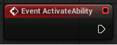 |
Event ActivateAbility | アビリティのエントリポイント。ここから処理を組む。 新規 GA Blueprint 作成時にグレーアウト状態で配置済み。Override メニューからの追加は不要。BP 03 |
| Commit Ability | コスト・クールダウンを消費する。 |
|
| End Ability | アビリティを終了する。 |
|
| Event OnEndAbility | アビリティが終了したときに発火するイベント。後処理に使う。 Was Cancelled（bool）出力ピンあり。End Ability 関数ノードとは別物。 |
|
| Play Montage and Wait | モンタージュを再生し、完了・割り込み・キャンセルの各タイミングで出力ピンが発火する。 |
|
| Wait Gameplay Event | 指定タグの Gameplay Event を受け取るまで待機する。 |
|
| Wait Gameplay Tag Added | ASC に指定タグが追加されるまで待機する。 Only Trigger Once: true 推奨。登録時点でタグが既にある場合は即発火。BP 04 |
|
| Wait Gameplay Tag Removed | ASC から指定タグが削除されるまで待機する。 同上。BP 04 |
|
| Apply Gameplay Effect to Owner | GA が付与されているキャラクター自身の ASC に GE を適用する。 |
|
| Execute GameplayCue On Actor (Burst) | 一度だけ GameplayCue を発火させる。 GA 内から完結させたい場合はこちら。Character BP 版と機能は同じ。BP EX 02 |
Gameplay Abilities — アビリティ管理
Character BP / 任意の Actor BP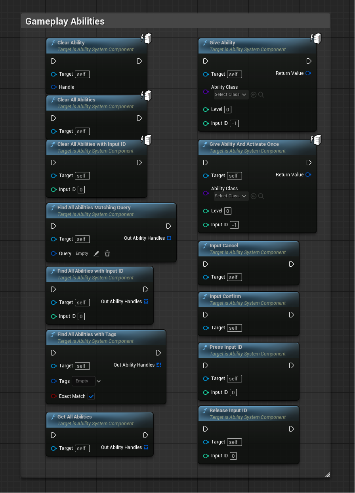
▲ Character BP のコンテキストメニュー → Gameplay Abilities カテゴリ| ノード名 | 用途 / 注意・補足 | |
|---|---|---|
| Give Ability | アビリティを ASC に登録する。未登録のまま TryActivate を呼ぶとサイレントに失敗する。 BeginPlay が基本。戻り値の Spec Handle を保存すると Clear Ability で削除できる。同一クラスを複数回 Give するとスロットが増えるため 1 クラス 1 回が原則。BP 03 |
|
| Give Ability and Activate Once | 登録と同時に一度だけ発動する。使い捨てアビリティに便利。 ループで呼ぶと Give のたびにスロットが増えるため、繰り返し使うアビリティには向かない。 |
|
| Clear Ability | 特定のアビリティを ASC から削除する。 Give Ability の戻り値（Spec Handle）を保持しておき、それを渡す。 |
|
| Set User Ability Activation Inhibited | フラグ 1 つで全アビリティをまとめてロック／アンロックする。 カットシーン・会話中に全入力を止めたいときに使う。タグ設計が不要なシンプルな全停止手段。 |
Gameplay Cue — エフェクト発火
Character BP / 任意の Actor BP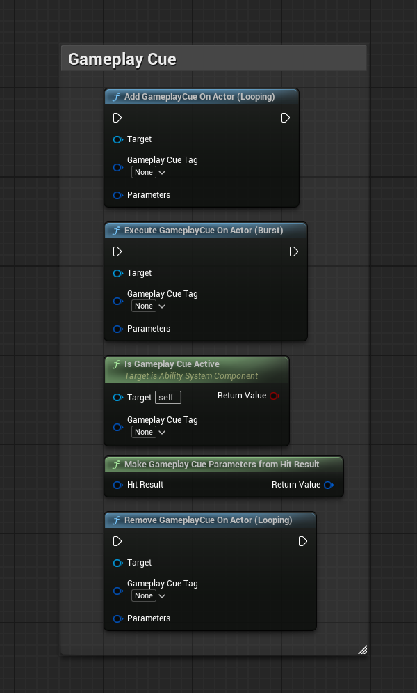
▲ Character BP のコンテキストメニュー → Gameplay Cue カテゴリBurst（Execute）は一度だけ発火するエフェクト。ヒットスパーク・SE など。
Looping（Add / Remove）は持続するエフェクト。炎・オーラ・バフ表示など。必ず Add と Remove をペアで呼ぶこと。
| ノード名 | 用途 / 注意・補足 | |
|---|---|---|
| Execute GameplayCue On Actor (Burst) | 一度だけ Cue を発火させる。ヒットエフェクト・着地 SE など瞬間的なエフェクトに使う。 GameplayCueNotify_Static の On Execute が呼ばれる。BP EX 02 |
|
| Add GameplayCue On Actor (Looping) | 持続エフェクトを開始する。 Remove で明示的に止めるまで継続する。GameplayCueNotify_Static の On Active → While Active が呼ばれる。Remove 必須 |
|
| Remove GameplayCue On Actor (Looping) | 持続エフェクトを停止する。 Add したときと同じ Gameplay Cue Tag を渡すこと。 |
|
| Is Gameplay Cue Active | 指定タグの Looping Cue が現在発火中かどうかを確認する。 Target は AbilitySystem コンポーネント参照。 |
|
| Make Gameplay Cue Parameters from Hit Result | ライントレースの Hit Result を Gameplay Cue パラメータに変換する。 ヒット位置・法線・対象 Actor を Cue に渡せる。Cue Blueprint 内で Get Hit Result して取り出す。BP EX 02 |
Gameplay Effects — GE 適用・管理
Character BP / 任意の Actor BP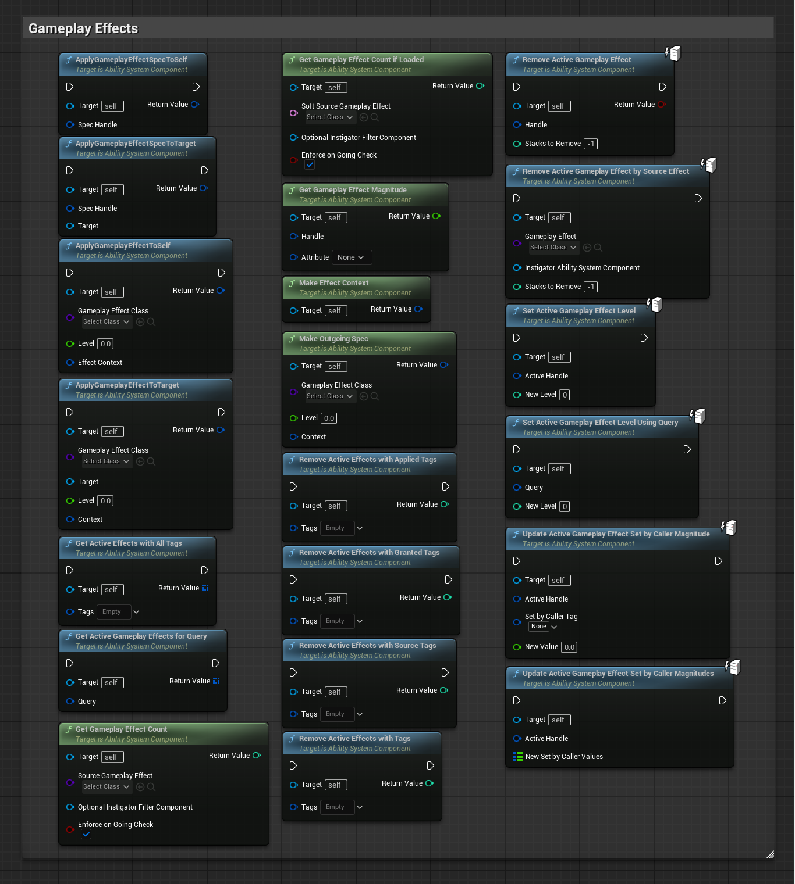
▲ Character BP のコンテキストメニュー → Gameplay Effects カテゴリ| ノード名 | 用途 / 注意・補足 | |
|---|---|---|
| Apply Gameplay Effect to Self | 自分自身の ASC に GE を付与する。 AbilitySystem コンポーネント参照から呼ぶ（ ApplyGameplayEffectToSelf）。BP 04 |
|
| Apply Gameplay Effect to Target | 別の Actor（相手）の ASC に GE を付与する。 Target ピンに相手の ASC コンポーネント参照を渡す。ダメージ・デバフに使う。BP EX 02 |
|
| Remove Active Effects with Tags | 指定タグを持つアクティブな GE をすべて解除する。 Duration / Infinite GE を途中でキャンセルしたいときに使う。 |
|
| Get Gameplay Effect Count | 指定の GE が何スタックかかっているか取得する。 Infinite GE のスタック数管理や UI 表示に使う。 |
|
| Get Active Gameplay Effect Remaining Duration | アクティブな GE の残り秒数を取得する。 クールダウン・バフの残り時間を UI に表示するときに使う。 |
Gameplay Tags — タグ操作
Character BP / 任意の Actor BP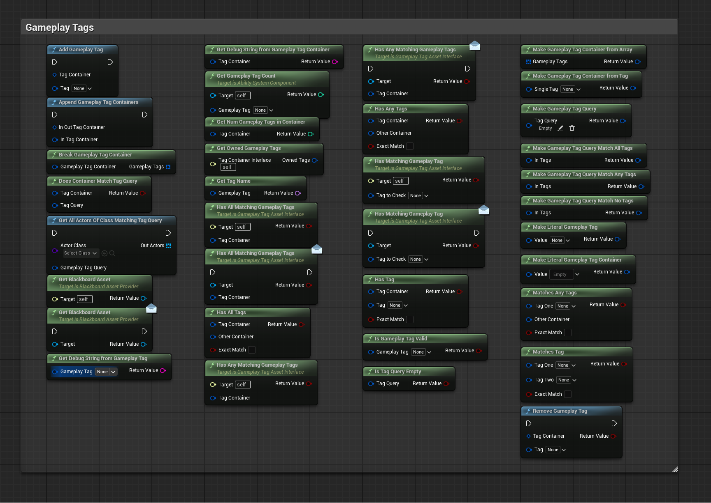
▲ Character BP のコンテキストメニュー → Gameplay Tags カテゴリ| ノード名 | 用途 / 注意・補足 | |
|---|---|---|
| Add Loose Gameplay Tags | GE なしで Actor の ASC に直接タグを付与する。 ノード名は複数形。 Gameplay Tags ピンはコンテナ型。単一タグを渡すには Make Literal Gameplay Tag Container を挟む。Actor ピンに Self を必ず繋ぐこと（未接続でサイレント失敗）。BP 04 |
|
| Remove Loose Gameplay Tags | ASC から Loose タグを削除する。 Add とペアで使う。BP 04 |
|
| Has Matching Gameplay Tag | ASC が指定タグを持つか確認する（bool）。 Target は AbilitySystem コンポーネント参照（関数ノードではない）。BP 04 |
|
| Has All Matching Gameplay Tags | 指定タグをすべて持つか確認する。AND 条件。 Tag Container ピンに複数タグを渡す。 |
|
| Has Any Matching Gameplay Tags | 指定タグのうちいずれかを持つか確認する。OR 条件。 同上。 |
|
| Make Literal Gameplay Tag Container | コード上でタグコンテナを作る。 Value ピンに単一タグを設定して Add / Remove Loose Tags に渡すときに使う。 |
タグ・属性の変化を監視する
Character BP / 任意の Actor BP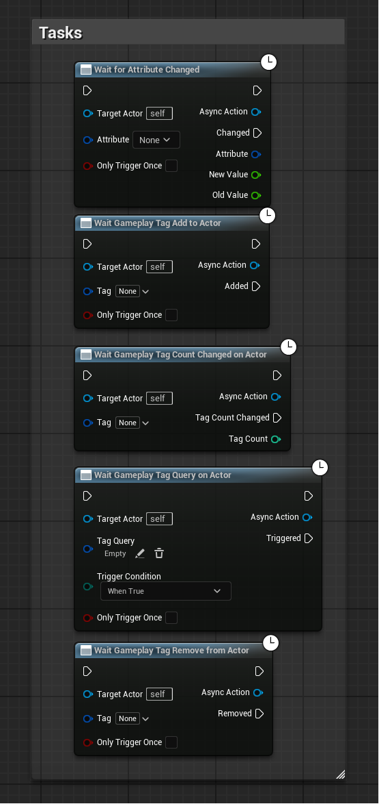
▲ Character BP → Ability / Tasks カテゴリ（Wait Tag Add/Remove/Count/Query, Wait for Attribute Changed）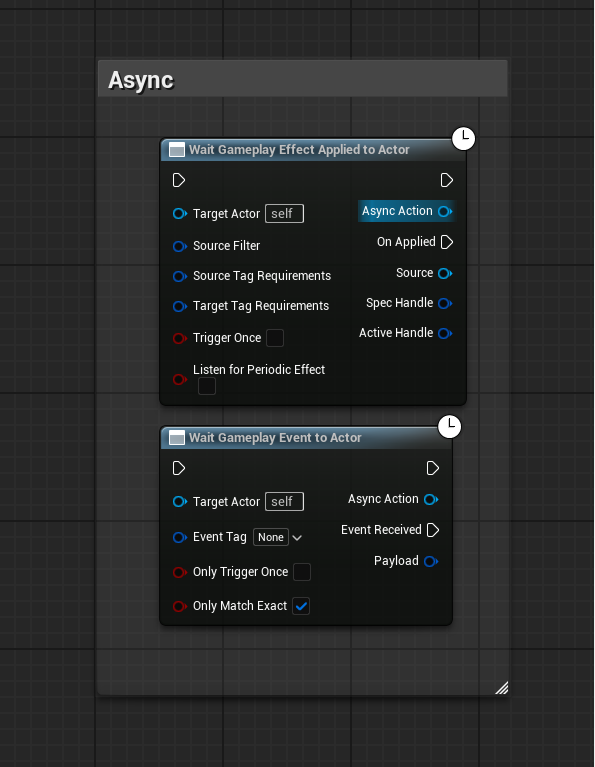
▲ Character BP → Ability / Async カテゴリ（Wait GE Applied, Wait Gameplay Event）Wait Gameplay Tag Add / Remove to Actor はデフォルトで Only Trigger Once: false。ループ構造で使うときは 必ず true に変更すること。false のまま何度もループすると古いタスクが蓄積し、発火回数が倍増していく。BP 04
| ノード名 | 用途 / 注意・補足 | |
|---|---|---|
| Wait Gameplay Tag Add to Actor | 指定タグが Actor の ASC に追加されたタイミングを検知する。 登録時点でタグが既に付いている場合は即座に発火する。 Only Trigger Once: true 推奨。BP 04 |
|
| Wait Gameplay Tag Remove from Actor | 指定タグが ASC から削除されたタイミングを検知する。 同上。ループで使うときは Only Trigger Once: true。BP 04 |
|
| Wait Gameplay Tag Count Changed on Actor | タグのスタック数が変化したタイミングを検知する。 同一タグを複数スタックできる GE を使っているときに便利。 |
|
| Wait Gameplay Tag Query on Actor | 複雑なタグクエリ条件（AND / OR など）の真偽が変化したタイミングを検知する。 Trigger Condition（When True / When False）でどちら向きの変化で発火するかを選べる。 |
|
| Wait Gameplay Effect Applied to Actor | 指定条件の GE が適用されたタイミングを検知する。 Source Tag Requirements や Target Tag Requirements でフィルタリング可能。 |
|
| Wait for Attribute Changed | Attribute の値が変化したタイミングを検知する。 C++ の AttributeSet が必要。Blueprint-only では利用できないケースが多い。 |
ユーティリティ
Character BP / 任意の Actor BP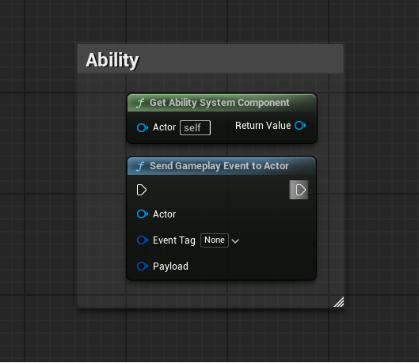
▲ Character BP → Ability カテゴリ| ノード名 | 用途 / 注意・補足 | |
|---|---|---|
| Get Ability System Component | Actor から ASC を取得する。 Actor ピンに Self または他の Actor を渡す。 |
|
| Send Gameplay Event to Actor | Actor に向けて Gameplay Event を送信する。 AnimNotify Blueprint → GA 内の Wait Gameplay Event への橋渡しに使う（Lyra スタイルパターン）。Actor ピンが未接続だと ASC が見つからずサイレント失敗する。BP 06 |
デフォルトイベント
GameplayAbility BP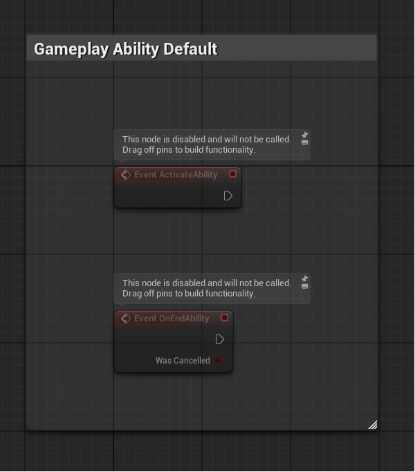
▲ GameplayAbility BP に最初から配置されているイベントノード| ノード名 | 用途 / 注意・補足 | |
|---|---|---|
| Event ActivateAbility | アビリティが発動したときのエントリポイント。ここから処理を組む。 新規 GA Blueprint 作成時にグレーアウト状態で配置済み。Override メニューから追加する操作は不要。BP 03 |
|
| Event OnEndAbility | アビリティが終了したときに発火するイベント。後処理に使う。 Was Cancelled（bool）出力ピンあり。End Ability 関数ノード（ピンなし）とは別物。 |
アビリティ制御
GameplayAbility BP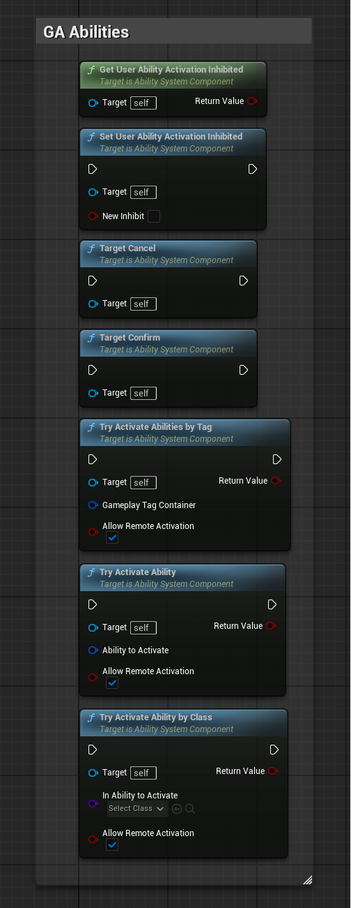
▲ GameplayAbility BP → GA Abilities カテゴリ| ノード名 | 用途 / 注意・補足 | |
|---|---|---|
| Try Activate Ability by Class | クラス指定でアビリティを発動する。 |
|
| Try Activate Abilities by Tag | タグコンテナで一致するアビリティを一括発動する。 複数アビリティをまとめて起動したいときに。 |
|
| Target Confirm | ターゲティング選択を確定する。 Wait Target Data Ability Task と組み合わせる高度な使い方。 |
|
| Target Cancel | ターゲティング選択をキャンセルする。 同上。 |
Montage 制御
GameplayAbility BP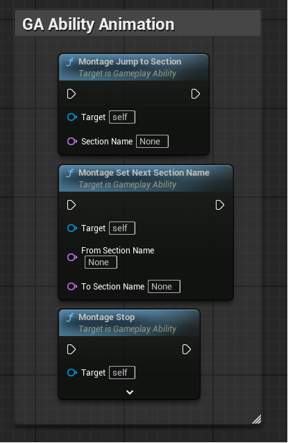
▲ GameplayAbility BP → GA Ability Animation カテゴリこのカテゴリのノードは Ability Task を使わずモンタージュを直接操作する関数群。Play Montage and Wait で再生中のモンタージュを動的に制御するために使う。
| ノード名 | 用途 / 注意・補足 | |
|---|---|---|
| Montage Jump to Section | 再生中のモンタージュを指定セクションへ即座にジャンプする。 Section Name ピンにセクション名（Name 型）を渡す。 |
|
| Montage Set Next Section Name | 現在のセクションが終わった後に再生するセクションを差し替える。 From Section Name → To Section Name の組み合わせ。1 モンタージュ内でコンボ分岐を表現するときに使う。 |
|
| Montage Stop | 再生中のモンタージュを停止する。 ブレンドアウト時間を指定できる（ Override Blend Out Time）。 |
Gameplay Effect — GA 内から付与
GameplayAbility BP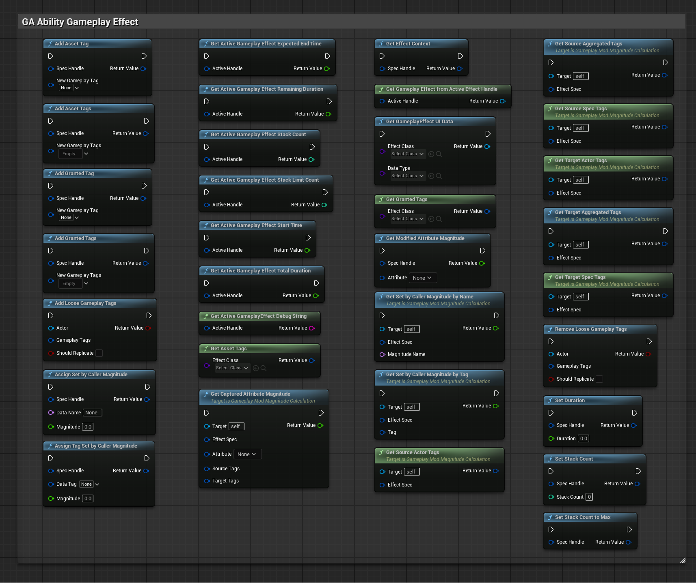
▲ GameplayAbility BP → GA Ability / Gameplay Effect カテゴリ| ノード名 | 用途 / 注意・補足 | |
|---|---|---|
| Apply Gameplay Effect to Owner | GA が付与されているキャラクター自身の ASC に GE を適用する。 Character BP 側の ApplyGameplayEffectToSelf と同等だが、GA 内から直接呼べる。Gameplay Effect Class と Level（1.0）を設定する。BP 08 |
|
| Apply Gameplay Effect to Target | 別の Actor（相手）の ASC に GE を適用する。 ヒット検出後に相手へダメージ GE を付与するときに使う。BP EX 02 |
|
| Remove Active Gameplay Effect | 指定の Active GE Handle を持つ GE を解除する。 Apply 系が返す FActiveGameplayEffectHandle を保持しておいて解除するときに。 |
Gameplay Cue — GA 内から発火
GameplayAbility BP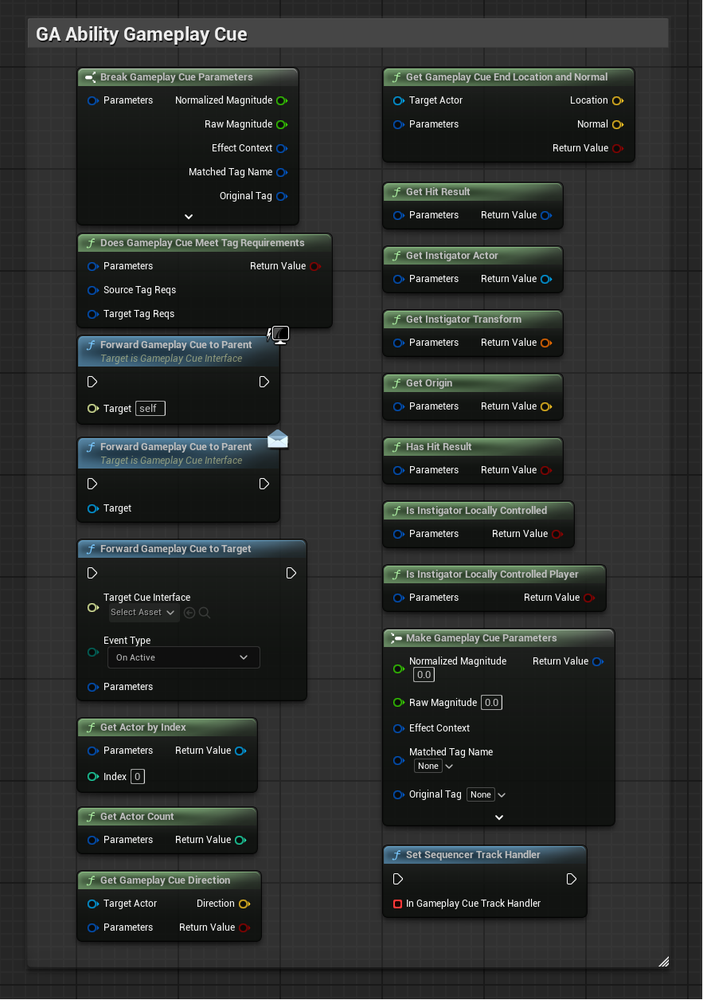
▲ GameplayAbility BP → GA Ability / Gameplay Cue カテゴリノード名・機能は Character BP 版と同じ。GA 内で完結させたい場合はこちらを使う。ヒット検出から Cue 発火まで GA 内で完結させるパターンで活用する。BP EX 02
| ノード名 | 用途 / 注意・補足 | |
|---|---|---|
| Execute GameplayCue On Actor (Burst) | 一度だけ Cue を発火させる。ヒットエフェクト・SE など瞬間的なエフェクトに使う。 GameplayCueNotify_Static の On Execute が呼ばれる。 |
|
| Add GameplayCue On Actor (Looping) | 持続エフェクトを開始する。 Remove 必須 |
|
| Remove GameplayCue On Actor (Looping) | 持続エフェクトを停止する。 Add したときと同じタグを渡す。 |
Effect Context
GameplayAbility BP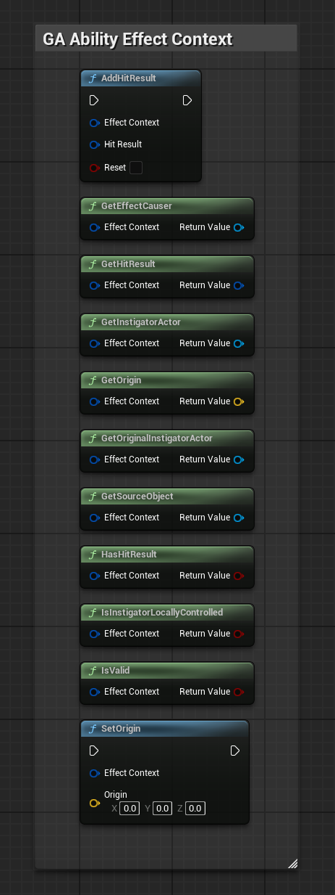
▲ GameplayAbility BP → GA Ability Effect Context カテゴリGE を適用する際に一緒に運ばれるコンテキスト情報のコンテナ。ヒット位置・発生源・インスティゲーター（攻撃者）などを格納でき、GE の Execution や GameplayCue 側で取り出せる。BP EX 02 でヒット位置を Cue に渡すために使う。
| ノード名 | 用途 / 注意・補足 | |
|---|---|---|
| Add Hit Result | Effect Context にライントレースの Hit Result を追加する。 Reset ピンを true にすると既存の Hit Result を上書きする。 |
|
| Get Hit Result | Effect Context から Hit Result を取り出す。 Cue Blueprint 内でヒット位置・法線・ヒット対象 Actor を取り出すのに使う。 |
|
| Has Hit Result | Effect Context に Hit Result が含まれているか確認する。 Branch で分岐して Cue の挙動を切り替えるときに使う。 |
|
| Get Instigator Actor | ダメージ・GE を発生させた Actor（攻撃者）を取得する。 「誰が攻撃したか」を Cue 側や GE Execution で知りたいときに。 |
|
| Get Effect Causer | GE を実際に適用した Actor を取得する。 Instigator（プレイヤー）と異なる場合がある（武器・弾丸 Actor など）。 |
|
| Get Origin / Set Origin | エフェクトの発生座標を取得・設定する。 Cue の発生位置としてパーティクルの Spawn 位置に使える。 |
|
| Is Instigator Locally Controlled | ローカルプレイヤーが発動したかどうかを確認する。 マルチプレイで「自分の攻撃にだけカメラシェイクを出す」処理などに。 |
Ability Tasks（主要抜粋）
GameplayAbility BP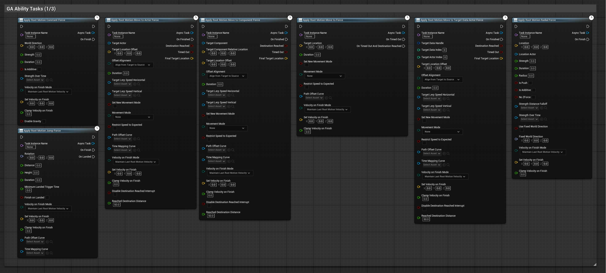
▲ GameplayAbility BP → GA Ability Tasks カテゴリ（1/3）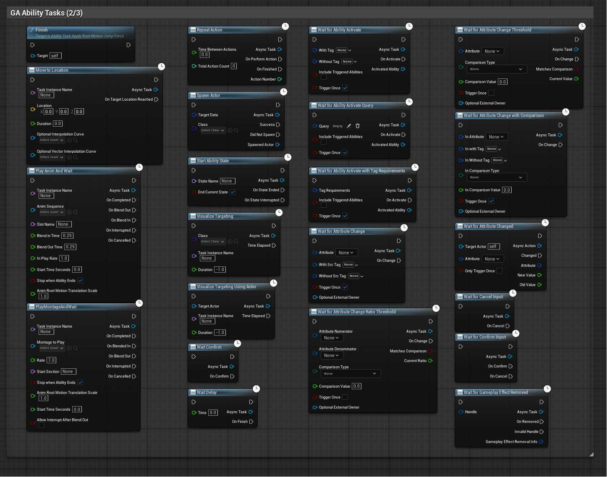
▲ GA Ability Tasks（2/3）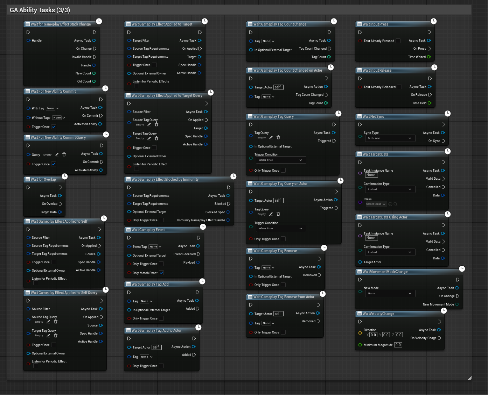
▲ GA Ability Tasks（3/3）GameplayAbility 内で使える非同期処理ノード。プロキシ関数を呼ぶだけでタスクが登録され、即座に次の処理へ進む（通常の Latent ノードとは異なる）。Sequence ノードで複数 Task を並行起動できる。BP 06
| ノード名 | 用途 / 注意・補足 | |
|---|---|---|
| Play Montage and Wait | モンタージュを再生し、完了・割り込み・キャンセルの各タイミングで出力ピンが発火する。 |
|
| Wait Gameplay Event | 指定タグの Gameplay Event を受け取るまで待機する。 |
|
| Wait Gameplay Tag Added | ASC に指定タグが追加されるまで待機する。 Only Trigger Once: true 推奨。登録時点でタグが既にある場合は即発火。BP 04 |
|
| Wait Gameplay Tag Removed | ASC から指定タグが削除されるまで待機する。 同上。 |
|
| Wait for Attribute Changed | Attribute の値が変化するまで待機する。 C++ AttributeSet が必要。 |
|
| Wait Input Press | 指定入力が押されるまで待機する。 チャージ攻撃・ターゲティング確定のトリガーに使う。 |
|
| Wait Input Release | 指定入力が離されるまで待機する。 チャージ完了の検知に使う。 Wait Input Press とセットで使うことが多い。 |
|
| Wait Delay | 指定秒後に発火する Ability Task 版の Delay。 通常の Delay ノードも GA 内で使えるが、こちらは Ability Task として動く。 |
|
| Wait Ability Activate | 別のアビリティが発動したタイミングを検知する。 アビリティ間の連携・連鎖処理に。 |
|
| Wait Ability End | 別のアビリティが終了したタイミングを検知する。 先行アビリティの完了を待ってから次の処理を始めるときに。 |
|
| Wait Move Input | 移動入力が入るまで待機する。 「方向キー + ボタン」でロールやステップを発動するパターンに。 |
GameplayCueNotify Blueprint 内のオーバーライド関数
GameplayCueNotify_Static / Actor BP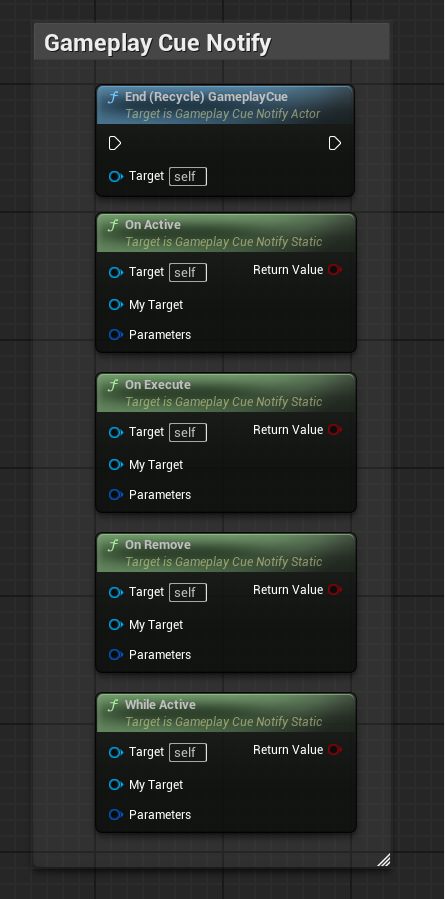
▲ GameplayCueNotify_Static の Blueprint 内で Override できる関数Content Browser → Blueprint Class → 親クラス GameplayCueNotify_Static（即時エフェクト用）または GameplayCueNotify_Actor（持続エフェクト用）。クラスデフォルトの Gameplay Cue Tag に GameplayCue.Attack.Hit 等を設定（GameplayCue. プレフィックス必須）。
| 関数名 | いつ呼ばれるか / 注意・補足 | |
|---|---|---|
| On Execute | Burst Cue（Execute）が発火したとき。 GameplayCueNotify_Static でオーバーライドする。ヒットスパーク・SE の再生はここに組む。BP EX 02 |
|
| On Active | Looping Cue（Add）が開始したとき。 パーティクルシステムの生成・開始処理に使う。 |
|
| While Active | Looping Cue が持続中、ティックごとに呼ばれる。 毎フレームの更新処理が必要なエフェクトに。 |
|
| On Remove | Looping Cue（Remove）が停止したとき。 パーティクルの停止・Actor のデストロイなど後片付けに使う。 |
|
| End (Recycle) GameplayCue | GameplayCueNotify_Actor をオブジェクトプールに返す。 GameplayCueNotify_Actor 専用。プールから取り出した Actor を再利用できる。 |